<div class="textcontainer">
<p class="margin"></p>
<h3>Final Project: A Portable Medical Incubator </h3>
<h4>Why Create a Portable Incubator?</h4>
The underlying motivation for creating a portbale incubator is to showcase the opportunities available for medical accessibility. The incubator is essential for growing organisms in order to diagnose bacterial disease, with the intent to distribute the correct proportion of antibiotics to the patient. Currently, the market for portable incubators shows a price range between ~$1000 to ~$5000. Although this price range is viewed as affordable in advanced nations accustomed to high medical standards, poor nations—or even poor regions within an advanced economy—are likely not able to take advantage of the most current medical technologies due to the constant strain of balancing finanical priorities. Therefore, my final project showcased that utilziing the most simpliest and cheapest components can yield a functional incubator that enhances medical accessibility. Moreover, the final project proves the potential for minituraizing medicine in order to make it readily available for any situation.
<video width="320" height="240" controls>
<source src="vid.mp4" type="video/mp4" size="50">
</video>
<br>
<br>
<h4>Creation Process</h4>
Even though the incubator consisted of a box, which was learned in week 1, the final project slowly began to develop during the microcontroller programming week. During this week, I learned I2C communication and how to intergrate a sensor into the OLED display. The following week, in the 3D design module, I designed a fan to disperse the oxgyen within the incubator.
<p class="margin"> </p>
<div class="center-colum">
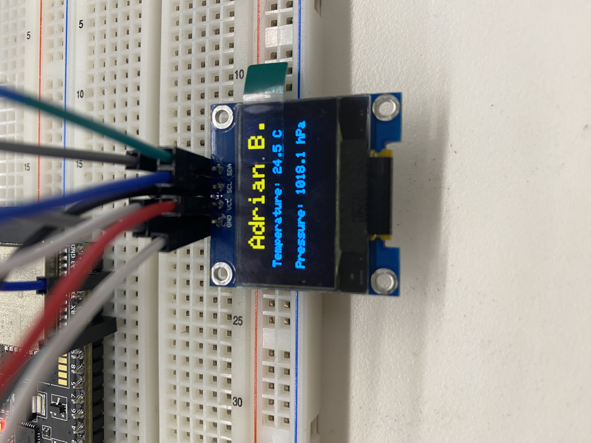
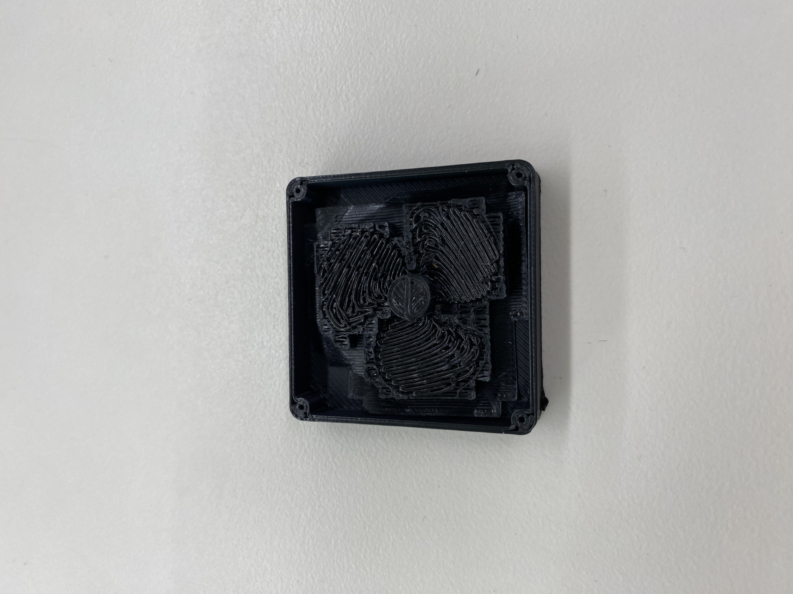
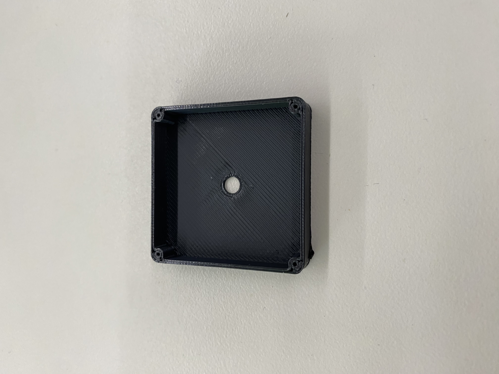
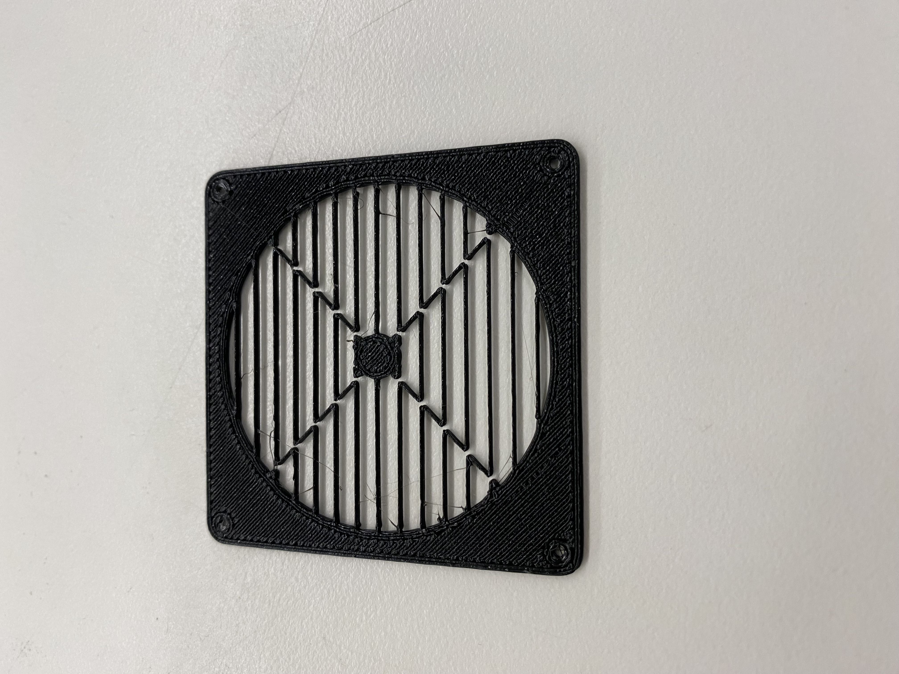
<br>
<br>
Thereafter, I committed myself to dedicated the remaining weekly assignments to align with my final project. As such, the electronic inputs module provided an especially excellent opportunity to learn how to setup and conduct reading experiments with a thermistor. Armed with the coding and setting up experience from the previous weekly assignments, I began to gradually intergrate all of the components.
<br>
<br>
<h4>Minimum Viable Product</h4>
Below is the first draft of what I intially thought the incubator could look like. My thinking was to have a hinged door with an LED strip above to indicate whether the door was opened or closed. Furthermore, I showed a crude method of installing the thermistor by creating a hole during the 3D print to read the inside temperature. Lastly, the networking module truly opened my eyes to the possibilities of a LED strip—which sparked the idea of incorporating it as a safety mechanism to tell if the door is open or closed.
<p class="margin"> </p>
<div class="center-colum">
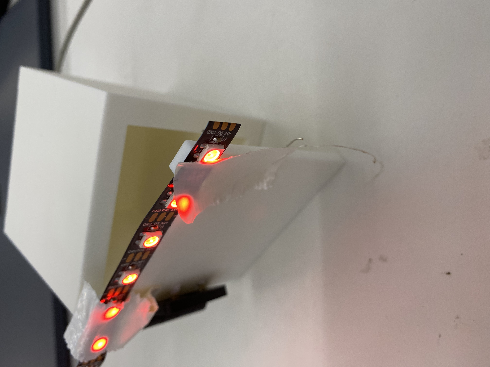
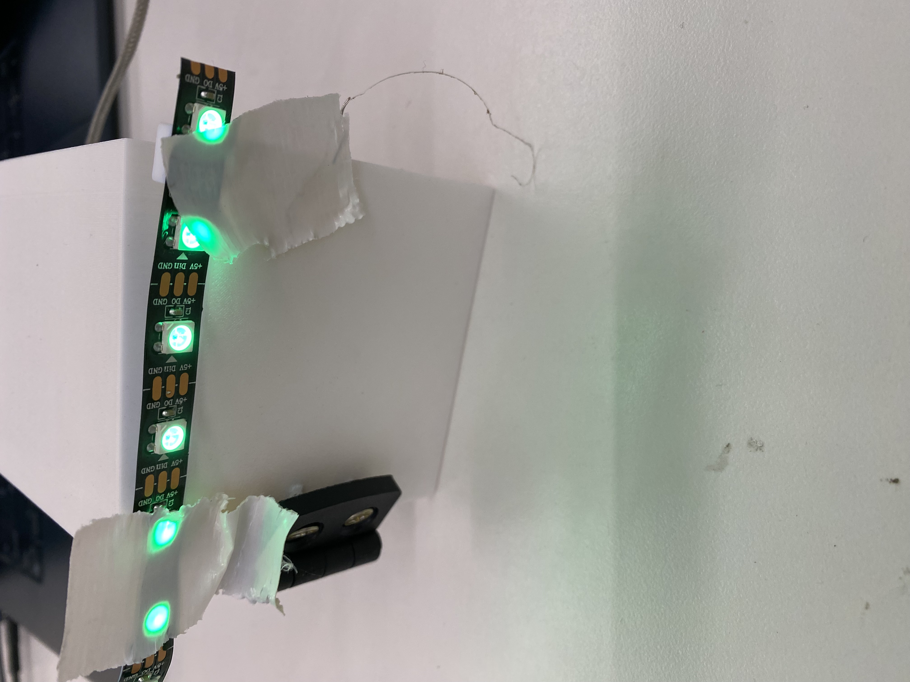
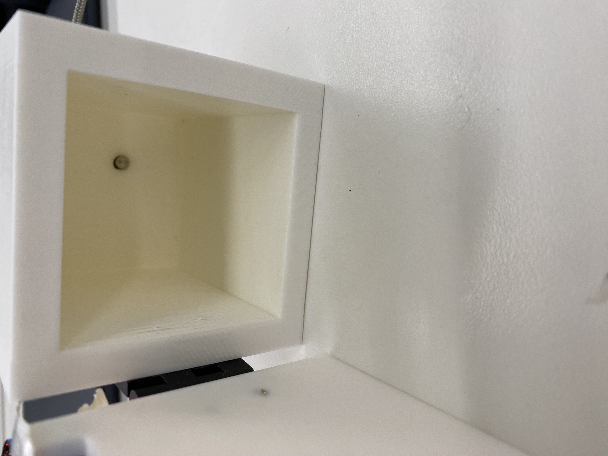
<br>
<br>
<h4>Final Product</h4>
Below are the components combined to make up the incubator for the final project. The incubator functioned well and, surprisingly, the heat plates allowed the temperature to reach a high of 38.5 C—which is a notch above optimal incubation temperature of 36-37 C. However, during the presentation fair, the wooden wall warped outwards due to the constant heat. Moreover, I unfortunately did not foresee how large of a scale the wiring would be, and the vast amount of wiring required actually hindered the functionality of the incubator. In particular, the wiring did not allow for a seamless opening and closing of the door, as well as installation of the fan on the side. Nonetheless, the proximity sensor and LED strip worked when I opened the door, in addition to the thermistor providing a real-time temperature reading and heating pads turning on or off depending if the door was opened or closed. Essentially, the final product was a still-air incubator that functioned and kept constant internal temperature. And given the surface area, it may be more advantageous for the incubator to be still-air since the heat is not required to constantly travel along a vast distance, such as in standard cabinet incubators. When accounting for still-air variables, the optimal incubation temperature is 38.3-38.8C. Thus, since the final product was able to reach 38.5C and stay there for a considerable amount of time, it can be deemed a successful temperature range was achieved.
<p class="margin"> </p>
<div class="center-colum">
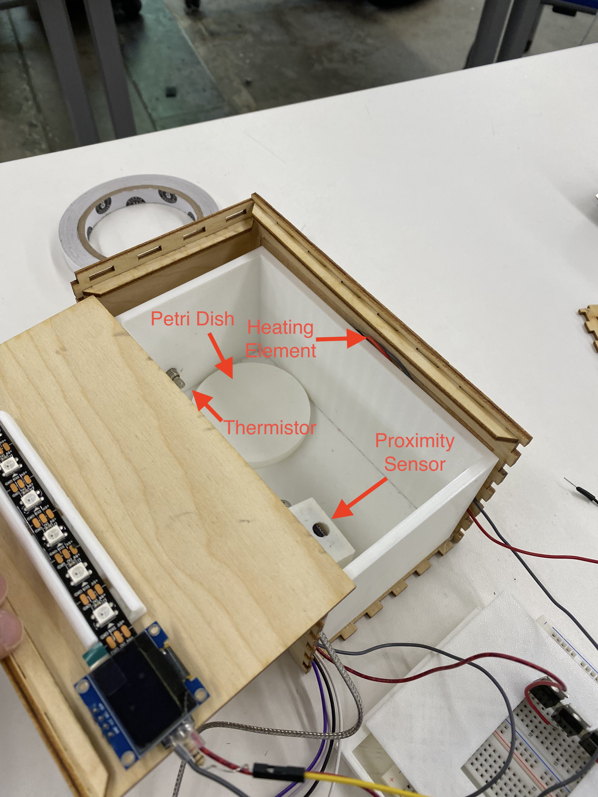
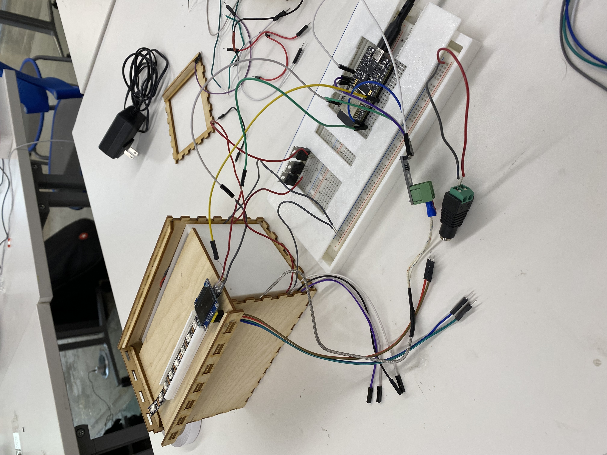
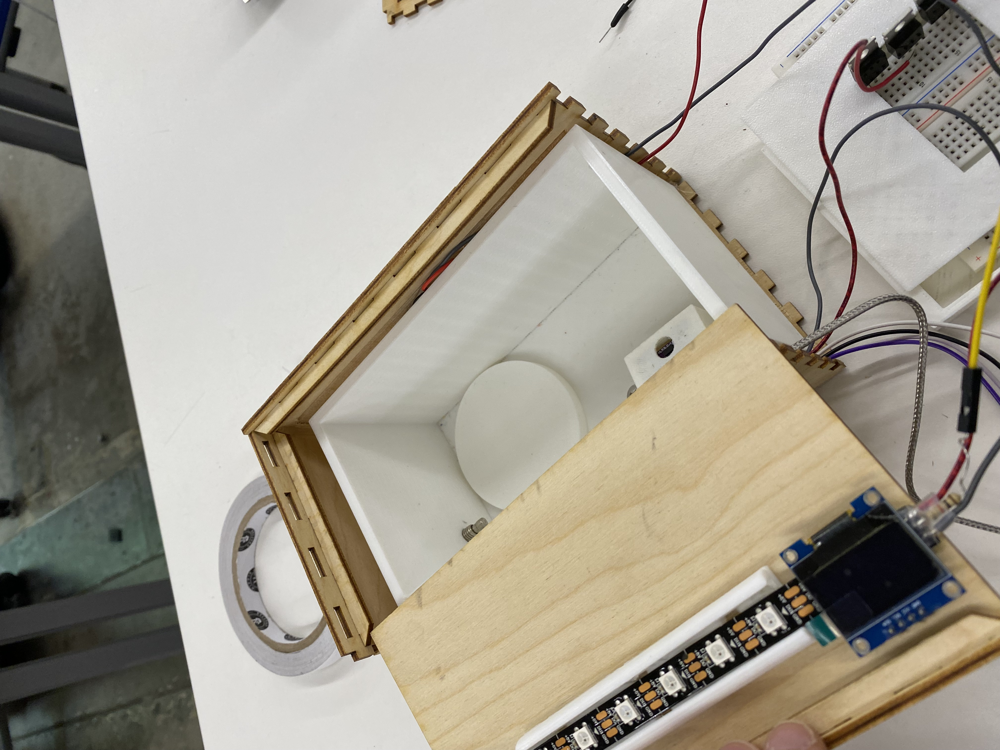
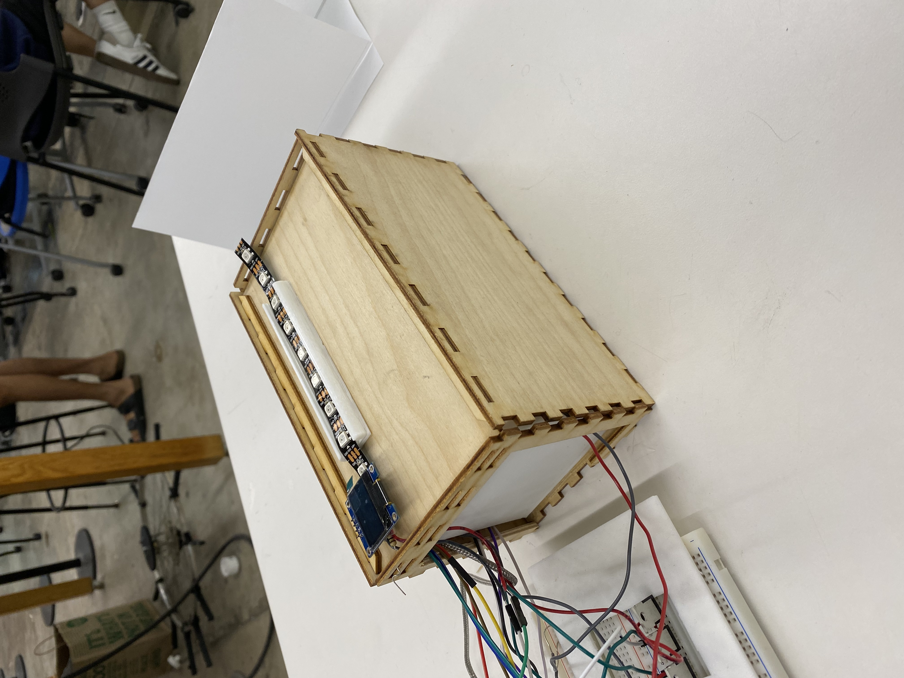
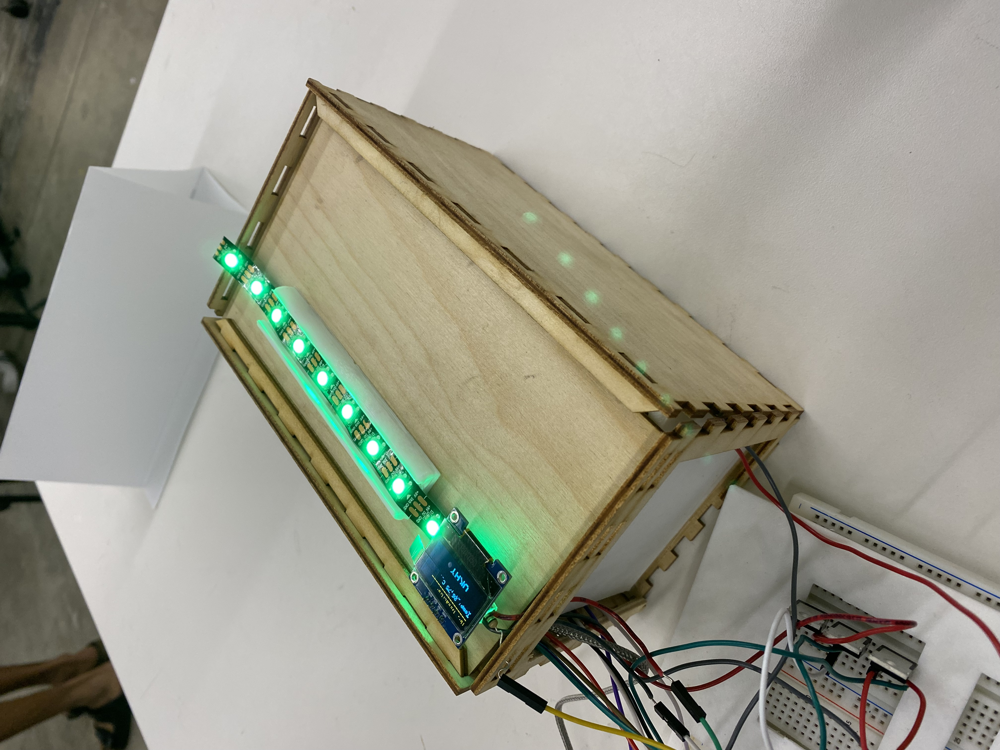
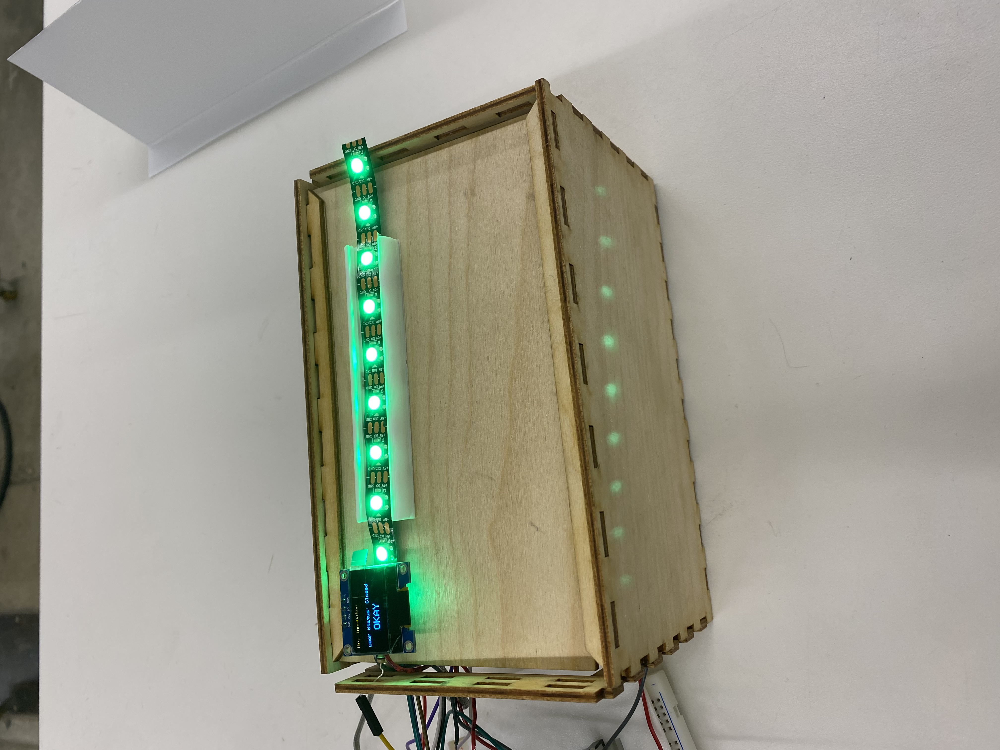
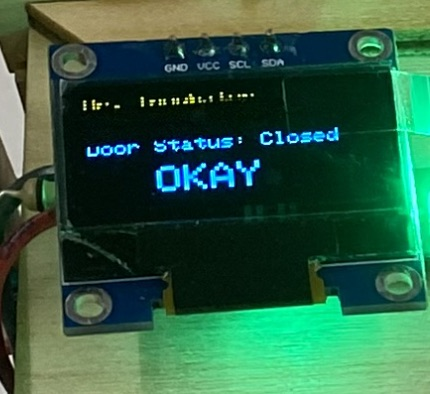
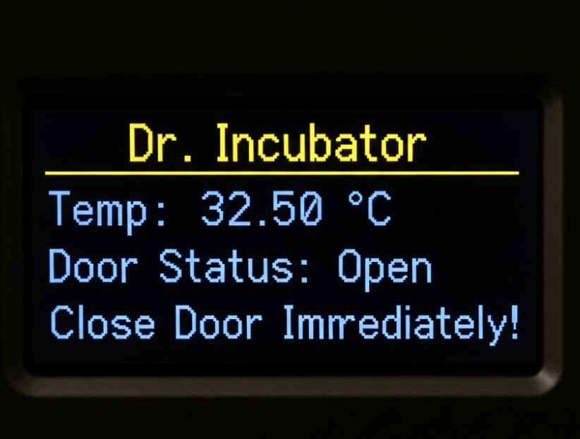
<br>
<br>
<h4>Software</h4>
Here is the code that I utilized for the incubator to function. The code enables the OLED display to show the interior temperature in real-time, the VL53l0x proximity sensor to show the current status of the incubator of whether the door is opened or closed, as well as the heating pads and fan to be on or off depending on if the door is opened or closed.
<pre><code class="language-arduino">
#include Wire.h
#include Adafruit_VL53L0X.h
#include Adafruit_NeoPixel.h
#include "max6675.h"
#include Adafruit_GFX.h
#include Adafruit_SSD1306.h
// --- Configuration ---
#define LED_PIN 25
#define NUM_LEDS 10
#define UPPER_THRESHOLD 90 // Distance in mm for the door to be considered open
#define SCREEN_WIDTH 128
#define SCREEN_HEIGHT 64
#define OLED_RESET -1
// VL53L0X I2C pins
#define VL53L0X_SDA_PIN 21 //Purple = VNC; Black = GND; Gray = SCL; White = SDA
#define VL53L0X_SCL_PIN 22
// MAX6675 SPI pins
#define MAX6675_SO_PIN 17
#define MAX6675_CS_PIN 18
#define MAX6675_SCK_PIN 19
// Heating pad control pins
#define HEATING_PAD_1_PIN 34
#define HEATING_PAD_2_PIN 35
// DC Motor control pin
#define MOTOR_PIN 32
// --- Global Variables ---
Adafruit_VL53L0X lox = Adafruit_VL53L0X();
Adafruit_NeoPixel strip(NUM_LEDS, LED_PIN, NEO_GRB + NEO_KHZ800);
Adafruit_SSD1306 display(SCREEN_WIDTH, SCREEN_HEIGHT, &Wire, OLED_RESET);
MAX6675 thermocouple(MAX6675_SCK_PIN, MAX6675_CS_PIN, MAX6675_SO_PIN);
// Variables for sensor data and state
bool doorState = false; // false = closed, true = open
int distance = 0;
float temp = 0;
// Millis variables for non-blocking timing
unsigned long previousMillis = 0;
const long updateInterval = 100;
void setup() {
Serial.begin(115200);
// --- Initialize all outputs ---
// VL53L0X sensor
Wire.begin(VL53L0X_SDA_PIN, VL53L0X_SCL_PIN);
if (!lox.begin()) {
Serial.println("Failed to boot VL53L0X");
while (1);
}
// OLED display
if(!display.begin(SSD1306_SWITCHCAPVCC, 0x3c)) {
Serial.println(F("SSD1306 allocation failed"));
for(;;);
}
display.clearDisplay();
display.setTextColor(WHITE);
// LED strip
strip.begin();
strip.show();
// Configure heating pad pins as outputs
pinMode(HEATING_PAD_1_PIN, OUTPUT);
pinMode(HEATING_PAD_2_PIN, OUTPUT);
// Configure motor pin as an output
pinMode(MOTOR_PIN, OUTPUT);
// Ensure heating pads and motor are OFF at startup
digitalWrite(HEATING_PAD_1_PIN, LOW);
digitalWrite(HEATING_PAD_2_PIN, LOW);
digitalWrite(MOTOR_PIN, LOW);
}
void loop() {
unsigned long currentMillis = millis();
if (currentMillis - previousMillis >= updateInterval) {
previousMillis = currentMillis;
// --- Read Sensors ---
VL53L0X_RangingMeasurementData_t measure;
lox.rangingTest(&measure, false);
// Explicitly check for the "out of range" status.
// RangeStatus == 4 means the sensor could not get a valid reading.
if (measure.RangeStatus != 4) {
distance = measure.RangeMilliMeter;
} else {
// The sensor is out of range, set a specific distance value
// to handle this state.
distance = -1;
}
temp = thermocouple.readCelsius();
// --- Update States ---
if (distance > UPPER_THRESHOLD || distance == -1) {
// Door is open
doorState = true;
strip.fill(strip.Color(255, 0, 0), 0, NUM_LEDS); // Red LEDs
strip.show();
// Turn heating pads OFF and motor OFF
digitalWrite(HEATING_PAD_1_PIN, LOW);
digitalWrite(HEATING_PAD_2_PIN, LOW);
digitalWrite(MOTOR_PIN, LOW);
} else {
// Door is closed
doorState = false;
strip.fill(strip.Color(0, 255, 0), 0, NUM_LEDS); // Green LEDs
strip.show();
// Turn heating pads ON and motor ON
digitalWrite(HEATING_PAD_1_PIN, HIGH);
digitalWrite(HEATING_PAD_2_PIN, HIGH);
digitalWrite(MOTOR_PIN, HIGH);
}
// --- Update OLED Display ---
display.clearDisplay();
display.setTextSize(1);
display.setCursor(0, 0);
display.println("Dr. Incubator");
display.println("-----------------");
display.print("Temp: ");
display.print(temp);
display.println(" C");
display.print("Door Status: ");
if (doorState) {
display.println("Open");
} else {
display.println("Closed");
}
if (doorState) {
display.setTextSize(1);
display.setCursor(5, 55);
display.println("Close Door!");
display.setCursor(5, 45);
display.println("Immediately");
} else {
display.setTextSize(2);
display.setCursor(30, 40);
display.println("OKAY");
}
display.display();
}
}
</code></pre>
<br>
<br>
<h4>CAD Models Used</h4>
Below are the Fusion files that were used during the creation process. I also used the sliding box from <a href="https://en.makercase.com/#/">Makercase</a> as the outer wooden shell for the final interation of the incubator.
<br>
<iframe src="https://myg338979.autodesk360.com/shares/public/SH30dd5QT870c25f12fcf3f1df25bb93b833?mode=embed" width="640" height="480" allowfullscreen="true" webkitallowfullscreen="true" mozallowfullscreen="true" frameborder="0"></iframe>
<iframe src="https://myg338979.autodesk360.com/shares/public/SH30dd5QT870c25f12fcb7aede2bb635fc74?mode=embed" width="640" height="480" allowfullscreen="true" webkitallowfullscreen="true" mozallowfullscreen="true" frameborder="0"></iframe>
<iframe src="https://myg338979.autodesk360.com/shares/public/SH30dd5QT870c25f12fcf06463cc949cfea1?mode=embed" width="640" height="480" allowfullscreen="true" webkitallowfullscreen="true" mozallowfullscreen="true" frameborder="0"></iframe>
<iframe src="https://myg338979.autodesk360.com/shares/public/SH30dd5QT870c25f12fcb986d86a72c9e72b?mode=embed" width="640" height="480" allowfullscreen="true" webkitallowfullscreen="true" mozallowfullscreen="true" frameborder="0"></iframe>
<iframe src="https://myg338979.autodesk360.com/shares/public/SH30dd5QT870c25f12fc27b33e6e377256b1?mode=embed" width="640" height="480" allowfullscreen="true" webkitallowfullscreen="true" mozallowfullscreen="true" frameborder="0"></iframe>
<br>
<br>
<h4>Hardware Used</h4>
The following hardware was used to create the functioning incubator:
<br>
<a href="https://www.mouser.com/ProductDetail/Espressif-Systems/ESP32-DevKitC-32E?qs=GedFDFLaBXFpgD0kAZWDrQ%3D%3D&srsltid=AfmBOoqo7oFxx89LQp-bGhBvp9DGPyo_A8MdM6ybC9PY68Mgif2MiDf0">ESP 32 Dev Board</a>
<br>
<a href="https://www.zyltech.com/zyltech-max6675-module-thermocouple-and-sensor/">MAX6675 Module Thermocouple and Sensor</a>
<br>
<a href="https://www.smart-prototyping.com/VL53L0X-ToF-Distance-Sensor">VL53LOX Proximity Sensor</a>
<br>
<a href="https://www.digikey.com/en/products/detail/digilent-inc/240-131/7916812?gclsrc=aw.ds&gad_source=1&gad_campaignid=20837516636&gclid=CjwKCAjw49vEBhAVEiwADnMbbA60QFXj9BI7CuOFVwMjeZ2JX2NIDMxu7eoAs7CXb_U2c2xFEqdWvxoCBPAQAvD_BwE">Breadboard</a>
<br>
<a href="https://www.addicore.com/products/oled-display-128x64-0-96in-monochrome?srsltid=AfmBOorOeLMA7P92v2vMDpypBqfB1_NWiFDw5s3VqkZy6NrW_Yf--z2F">OLED Display</a>
<br>
<a href="https://www.amazon.com/Oracle-Lighting-Exterior-Black-Strip/dp/B0FH1TH1H4">LED Strip</a>
<br>
<a href="https://www.sparkfun.com/heating-pad-5x15cm.html">Heating Pad</a>
<br>
<a href="https://www.allelcoelec.com/blog/IRF4905-P-Channel-MOSFET-Guide-Specifications-Pin-Details-and-Substitutes.html?srsltid=AfmBOoqgzPWsJxdOBsFFT8xthlKd2TSCqvsywpAdCUnkxraTp2vI27z2">MOSFET</a>
<br>
<h4>Refinements Moving Forward</h4>
Moving forward, I would either expand the outer shell to accomodate the wiring or solder the wiring components into a PCB board. The wiring must be addressed in an updated version because it must be compact while still allowing functional consistency. In addition, I would redesign the outer shell to have an hinged lid rather than a sliding one and change the material from wood to a heat-resistant plastic. The hinged lid would allow for a handle to also be placed on top of the incubator. In terms of the interior incubation chamber, I would substitute the interior PLA shell for stainless steel to withstand long-term heating affects since the PLA poses a risk for deforming after long-term use. Lastly, to mitigate cross-contamination, I would cover up the proximity sensor and thermistor such that it would comprise a sub-layer and not touch the petri dish inside. An initial method to reduce the risk of cross-contamination is placing a thin glass (or a see-through material) floor so the components can still function while being part of a separate compartment.
</div>